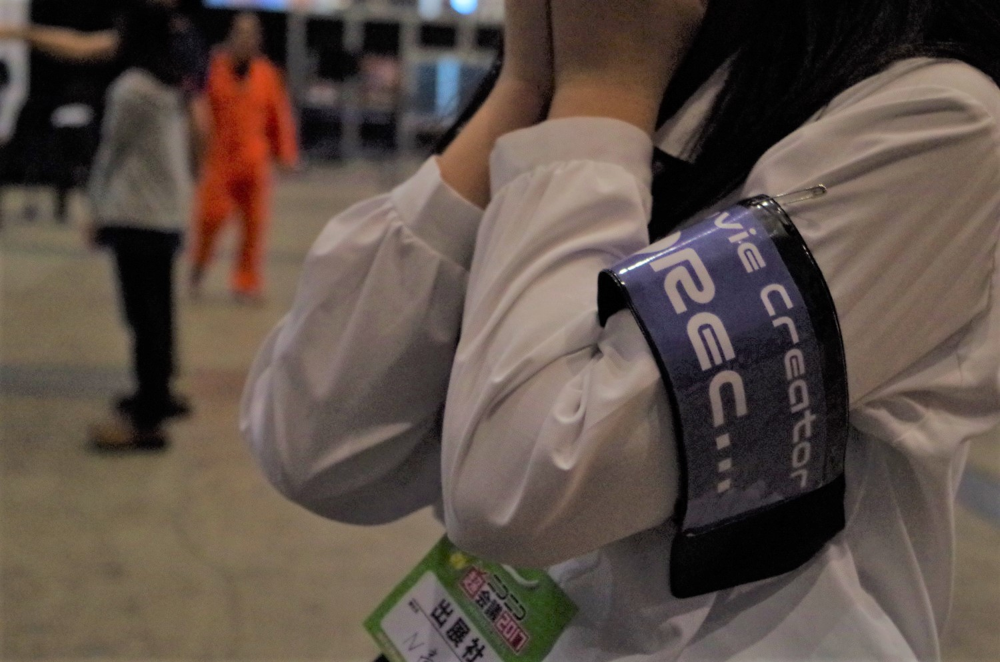
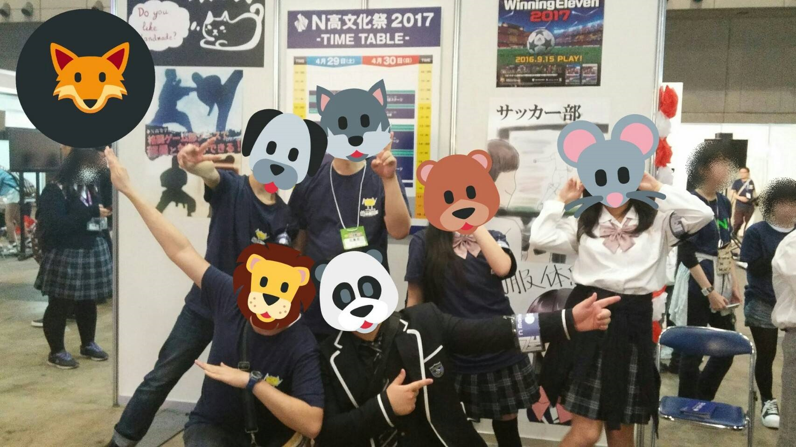

NMC About
NMCことN Movie Creatorは角川ドワンゴ学園N高等学校の公認同好会です。
NMCのモットー、最終的な目標は「一人ひとりをMovie Creatorにする」
一人ひとりの個性を伸ばし、成長させて行くことによって自分を誇ることの出来る
Creatorになって欲しいと言う願いも込めたモットーです

NMC Members
・パンダ 《会長》 ・タルメイロ 《副会長》 ・のどあめ 《副会長》
・えむけー《書記》・sho 《会計》・waricoma 《システム管理》
and more members...

NMC Movie
NMC Connect
活動記録
2016年7月13日 Slackのチャンネルを作成
2016年9月9日 同好会を申請する
2016年9月12日 N Live Movie Teamとして同好会設立
2016年9月から2017年2月まで、同好会員でゲームをし2017年2月まで、
同好会員でゲームをしてる様子をニコニコ生放送で配信したり
Skypeで通話をしたりして楽しく遊んでいた。
2017年2月上旬に、文化祭実行委員会から、同好会として何か発表しないか打診がくる
2017年2月15日から同好会の活動内容を見直す議論が行われるようになる
2017年2月27日に、同好会名をN Movie Creator に変更。生放送を同好会の活動から外し、
動画制作をメインに活動することにした。
2017年3月29日、文化祭閉会式で流す振り返り映像の制作に着手。
撮影する場所と時間を決めて作戦を立てたり、モーショングラフィックスの作成を行う。
2017年4月15日、文化祭実行委員会から、開会式で流すファンファーレ映像の編集を依頼される
2017年4月29日、N高等学校文化祭2017の開会式にて、ファンファーレ映像が放送された！
2017年4月30日、閉会式にて、文化祭2017の振り返り映像が放送された！